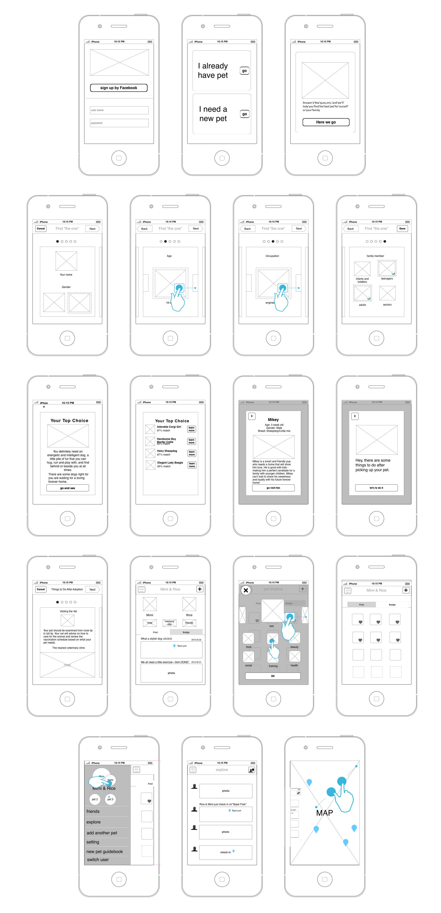
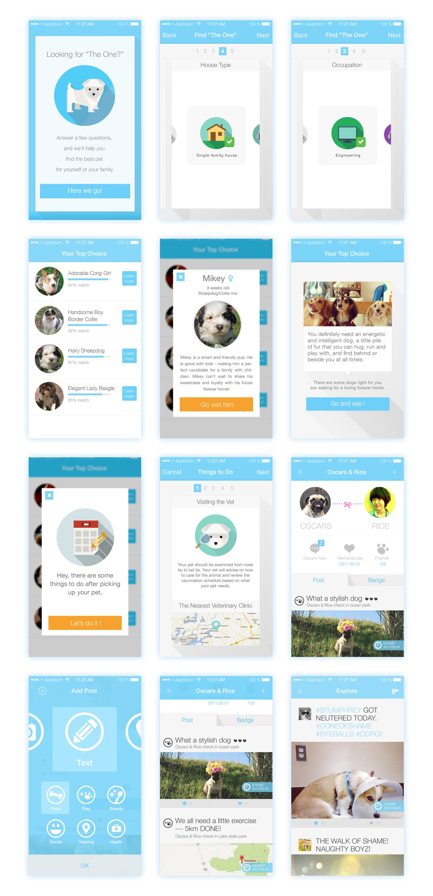

A CONCEPT APP DESIGNED TO SOLVE PET-RELATED PROBLEMS.
PEMORY - PET MEMORY
Pemory is a concept app designed for current or expectant pet owners. Our goal is to help users to solve the pet related problems they may encounter in their life and prevent pet owners from giving up their pets easily.
According to BBC news, Taiwan is the No.1 country in exporting abandoned animals. In recent years, the number of stray animals in Taiwan has continued to increase. A large stray animal population causes public health, environmental, and nuisance problems. The strategy adopted by the government to solve these problems is to capture those animals and keep them in a shelter. If those animals are not adopted in 7 days, they will be euthanized. As pet lovers, it’ s a really sad situation for us. We wondered why people abandon their pets. We wanted to find out the key insights for the stray animal issue. We would like to come up with a new solution to improve this situation.
In Taiwan, the changes in living environment or living condition is the most common reason why people give up pets. The changes can be very diverse, including moving, having newborn babies, or breaking up. Another common reason is that the living needs of pets go beyond the owners’ expectations. But, why do people think giving up animals is the only possible solution? We found out that most people regard pets as property.
When a tool is not useful or no longer needed, we can always throw it away. However, pets are not tools. They provide us unconditional love. On the first day they come to our home, they are already our family. We never abandon our kids, so why abandon our pets?
With this in mind, we designed an app specifically for current or expectant pet owners to remind them that pets are our dearest family, and encourage them to interact with their pets and keep all the beautiful moments with pets, just like what they do with family. Furthermore, we try to help pet owners to solve pet-related problems they may face in their life.
This project not only tries to solve the pet ownership problem, but also concerns the stray animal issues of society's stray animal issues. We find out the difficulties of keeping pets that pet owners may encounter and offer alternative solutions other than abandonment for the owners to help them be more responsible.
I began to sketch as many different directions as I could, pick the best one solution. After getting to a good place with each iteration in Photoshop, I would then turn to After effect to build UI animation.
First, I sketch rough wireframe that based on iOS 7 guideline, and discuss it with my partner. And I think that sketching is a great way to get the ball rolling and can save hours before our start the digital design.
Second, I start plan specific interaction flow so that I can figure out my interaction process and start design UI.
‘Matching’ is a function which provides a simple quiz for anyone looking for the perfect pet for themselves. It does this by asking users to answer some questions about their lifestyle, residential environment, family members, personality, and preference. Based on these answers, the system will match them with the right pets for adoption. It also offers tips and guidelines for new pet owners to help them step by step to get ready for pet ownership.
This function helps users to record all the incredible moments and sweet memories with their pets anytime and anywhere. For example, they can write down interesting things and take photos while taking a walk with their pets. And all the records will be archived on their personal page. This motivates users to interact with and create more special memories with their pets by providing a variety of special badges. It helps users to establish a close relationship with their pets.
A social function provides users a platform to share every precious moment they spend with their pets with pet lovers around the world. They can exchange their funny stories and experiences anytime. When they encounter pet-related problems, they can simply ask other owners for help. Users can also get useful information such as pet-friendly restaurants or nearby pet hospitals.